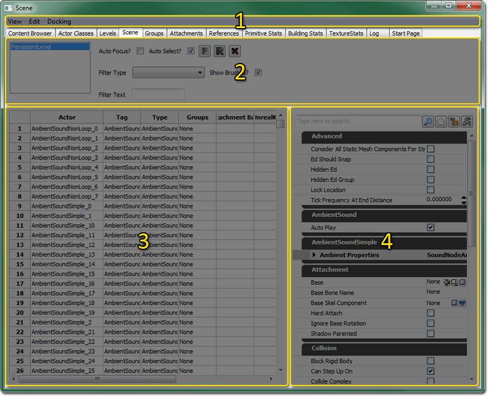
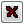
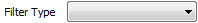

UDN
Search public documentation:
SceneManagerReferenceKR
English Translation
日本語訳
中国翻译
Interested in the Unreal Engine?
Visit the Unreal Technology site.
Looking for jobs and company info?
Check out the Epic games site.
Questions about support via UDN?
Contact the UDN Staff
日本語訳
中国翻译
Interested in the Unreal Engine?
Visit the Unreal Technology site.
Looking for jobs and company info?
Check out the Epic games site.
Questions about support via UDN?
Contact the UDN Staff
UE3 홈 > 언리얼 에디터와 툴 > 씬 매니저 참고서
씬 매니저 참고서
문서 변경내역: Dave Burke 작성. Richard Nalezynski 관리. Jeff Wilson 업데이트. 홍성진 번역.
개요
씬 매니저 열기
씬 매니저 인터페이스

메뉴바
보기
- 새로고침 - 액터 목록을 새로고칩니다.
편집
- 삭제 - 현재 레벨에서 선택된 액터를 삭제합니다.
도킹
- 붙이기 - 현재 떠다니는 창을 메인 브라우저 창에다가 붙이는 옵션입니다. 현재 브라우저가 도킹된 상태면 체크된 것으로 표시됩니다.
- 떼기 - 메인 브라우저 창에서 도킹된 브라우저를 떼어내어 자체적으로 떠다니는 창으로 만듭니다. 현재 브라우저가 떼어낸 상태면 체크된 것으로 표시됩니다.
- 브라우저 복제 - 현재 브라우저를 복제하는 옵션입니다.
- 브라우저 삭제 - 현재 브라우저를 삭제하는 옵션입니다. 복제된 브라우저 창에서만 켜집니다.
툴바
씬 매니저의 상단에는 선택된 액터로의 포커스 및 액터 테이블의 내용 변경을 위한 콘트롤이 있으며, 가장 왼쪽에는 지속 레벨과 스트리밍된 레벨로 채워지는 목록입니다.  | 체크하면 테이블 뷰에서 액터를 선택할 때 메인 에딘터 뷰포트가 선택된 액터에 중심을 맞추게 됩니다. |
| "자동 포커스?"가 꺼졌을 때, 이 버튼을 통해 액터 테이블에서 선택한 액터로 에디터 뷰포트의 포커스를 수동으로 맞춥니다. | |
 | 모든 씬 매니저 패널을 수동으로 새로고칩니다. |
|  | 선택된 액터를 전부 삭제합니다. |
|  | 이 콤보에서 액터 클래스를 선택하면 해당 클래스의 액터만 액터 테이블에 표시됩니다. |
 | 브러시 액터를 씬 매니저에 표시할지 여부를 정합니다. |
 | 이 필드에 입력된 텍스트가 이름에 포함된 액터만 표시합니다. |